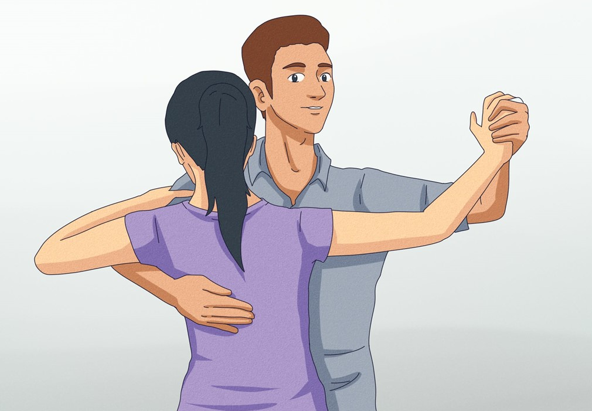
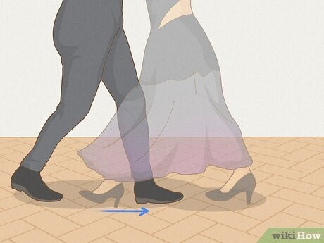
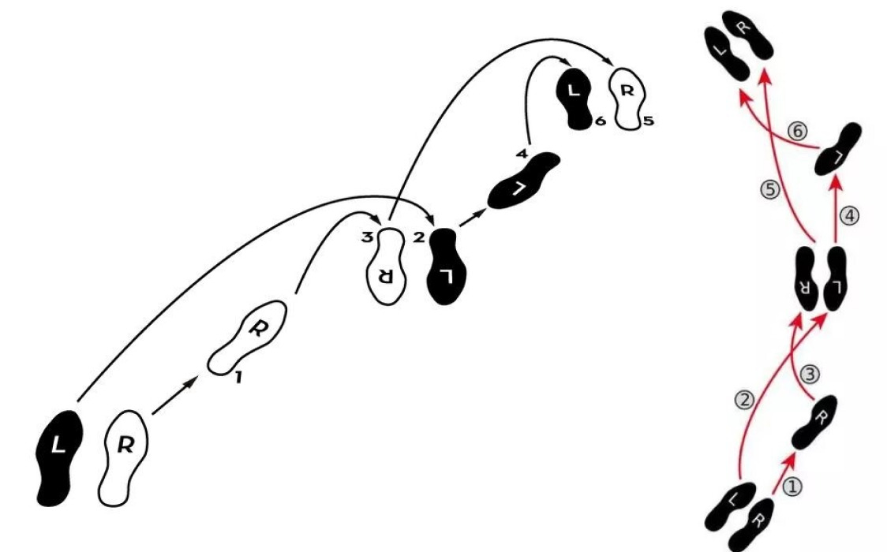
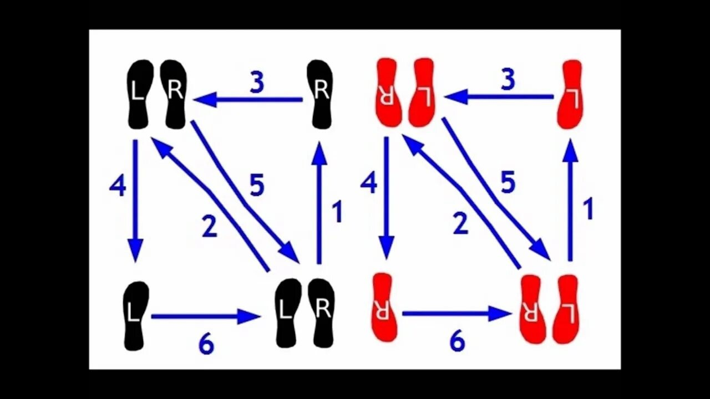

1. Введение
Вальс — один из самых известных бальных танцев. Его легко узнать по ритму «раз-два-три» и плавному кружению пар. Вальс танцуют на балах, выпускных и свадьбах, и он давно стал символом романтики.
Но так было не всегда. Вальс появился из народных танцев Австрии и Чехии, и поначалу его считали неприличным: партнёры держались слишком близко. Позже, во многом благодаря музыке Иоганна Штрауса, вальс полюбили во всём мире. Сегодня есть два основных вида: медленный вальс и быстрый венский.
2. Советы
- Выберите просторное место у зеркала — так сразу будет видно ошибки в положении ног и рук.
- Наденьте удобную одежду, не сковывающую движения, и обувь на низком каблуке или без него (с туфлями спешить не стоит), чтобы обучение прошло комфортно и без травм. Волосы лучше собрать в хвост или пучок, чтобы не отвлекаться.
- Перед любой тренировкой нужно 5–7 минут делать разминку. Например, круговые движения стопы, мягкие выпады, наклоны корпуса — это разогреет мышцы, убережёт от травм и улучшит подвижность.
- При заучивании движений советую проговаривать счёт вслух — это поможет держать ритм. Не пытайтесь добавлять повороты: сначала нужно закрепить базовые движения. Учите движения медленно, а когда тело запомнит, ускоряйтесь.
- 10–15 минут каждый день лучше, чем 2 часа раз в неделю — мышцы и память запомнят быстрее.
- Попробуйте снять себя на видео: 20–30 секунд хватит, чтобы увидеть, где вы подпрыгиваете, заваливаетесь или торопитесь.
- Не гонитесь за длиной шага: лучше короткий, но чистый и плавный шаг, чем широкий, но рваный.
3. Положение рук и ног в танце
- Встаньте ровно, держите спину прямо, слегка согните колени (вальс танцуют на слегка согнутых ногах).
- Если танцуете один, то руки держите расслаблено вдоль тела, позже они станут «красотой» в комбинациях.
- Если танцуете в паре, руки принимают положение «рамочки». Партнёр правой рукой держит девушку за талию, а левую невысоко поднимает, согнув в локте, ладонью вверх. Партнёрша кладёт правую руку в ладонь партнёра, а левую — ему на плечо.
- У ног располагаются четыре дорожки:
- левая нога девушки,
- правая нога мужчины,
- правая нога девушки,
- левая нога мужчины.
- Девушка слегка прогибается в спине и прижимается к партнёру — чем меньше расстояние между партнёрами, тем удобнее двигаться.
- Голова её слегка повёрнута влево. Партнёр смотрит прямо, его роль — «ведущий». Партнёрша следует за шагами партнёра.
- Общение в паре происходит через движения — корпус и руки партнёров. Это тренирует контакт и синхронность. Не забывайте держать локти — это важно!

4. Шаги
Вальсовый шаг
– основной шаг в паре. Он выполняется на 3 счета: «раз-два-три». Шаги должны быть скользящими, представьте, что на полу тонкий слой масла, делайте шаги так будто скользите, не отрывая стопу надолго. Это тренирует плавность и убирает «прыжки» в танце.
- 1 счет – шаг вперед.
- 2 счет – подставить свободную ногу, параллельно второй.
- 3 счет – довернуть корпус, а после поменять ногу на противоположную, чтобы с нее сделать следующий шаг.
В паре он выглядит чуть иначе. Девушка всегда шагает сначала левой ногой назад, а потом правой вперед. Мужчина – как написано выше. По кругу комбинация повторяется несколько раз.


Малый квадрат – выполняется как в паре, так и сольно. Нарисуйте в голове на полу для себя небольшой квадрат. Мы будем двигаться по его сторонам. Вспоминаем «раз-два-три». Сначала танцуем медленно без музыки, потом под счет и под вальс.

Сольно:
1 такт
- шаг назад левой ногой
- шаг правой ногой в сторону
- подставить левую ногу к правой и приготовить правую ногу для следующего шага.
Мы прошли только половину квадрата.
2 такт
- правой ногой шаг вперед
- левой ногой шаг в сторону
- подставить правую ногу к левой
Малый квадрат готов. В паре девушка шагает как написано выше, мужчина сначала выполняет 2 такт, потом 1.
Схема для девушки показана чёрным цветом, для мужчины — красным.
Большой квадрат – выполняется вальсовым шагом, который повторяется 4 раза. смотреть выше
Если вы хотите научиться танцевать красиво и максимально правильно, советую обратиться за помощью к опытному хореографу, он сможет помочь вам обрести уверенность в танце.